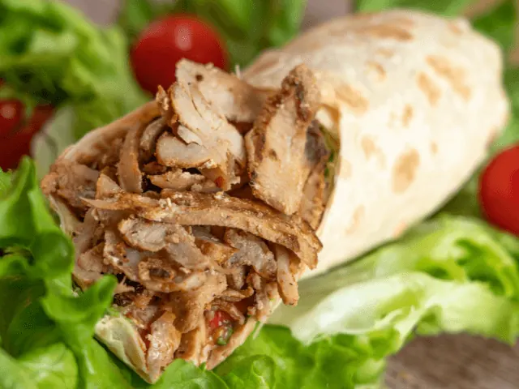
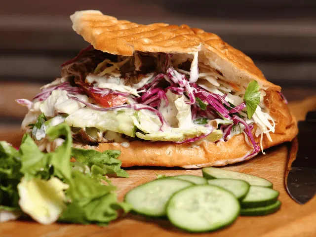

Zin in een Broodje Shoarma? Bezoek Deze Tentjes in Nijmegen
Gepubliceerd op 21 februari 2023, bijgewerkt op 20 oktober 2023
Onderdeel van de gids Restaurants in Nijmegen

Kun jij een lekker broodje of een heerlijke shoarma schotel wel waarderen? Dan ben je zeker niet de enige. Shoarma is één van de meest populaire fastfood gerechten die we in ons land kennen. In de grote steden vind je dan ook veel verschillende soorten shoarma tentjes. Ook in Nijmegen kun je terecht voor een heerlijk broodje kebab. Maar waar moet je dan precies zijn?
In het centrum van Nijmegen kun je kiezen voor de shoarma tent Döner Kebab of Adam’s Eethuis Mix. Beide zaakjes bieden een uitgebreid menu aan met diverse shoarma gerechten. Ook restaurant Papa George’s Fine Food in de Indische buurt van Nijmegen, is absoluut een aanrader!
Ben jij benieuwd welke shoarma tent het beste aansluit bij jouw persoonlijke wensen? Dan raden wij je aan om het onderstaande artikel grondig door te nemen. Wij vertellen je namelijk meer over onze favoriete eetgelegenheden. We nemen verschillende shoarma tentjes onder de loep, waar jij terecht kunt voor een heerlijke maaltijd. Laten we dus snel van start gaan!
Overzicht Shoarma & Grill restaurants in NIjmegen
De beste shoarma in Nijmegen vind je hier!
Shoarma komt oorspronkelijk uit het Midden-Oosten, en kan worden gemaakt van verschillende soorten vlees. Lamsvlees, rundvlees, kip of varkensvlees, de mogelijkheden zijn groots. Het vlees wordt in dunne reepjes gesneden en gekruid met speciale shoarmakruiden. Vervolgens wordt het vaak geserveerd met pitabroodjes of bijvoorbeeld patat en rauwkost. Ook knoflooksaus is voor velen een onmisbaar onderdeel van een lekkere maaltijd.
Laten we eens enkele goede shoarma tentjes in Nijmegen onder de loep gaan nemen.
· Döner Kebab Nijmegen
Döner Kebab is zonder twijfel één van de meest populaire shoarma tentjes in het centrum van Nijmegen. Het betreft een knusse eetgelegenheid waar je kunt neerstrijken voor een heerlijk broodje shoarma, echter kun je ook alle specialiteiten van het menu thuis laten bezorgen.
De menukaart is uitermate veelzijdig en divers. Je kunt hier de lekkerste shoarma krijgen in allerlei soorten en maten. Een schotel, een broodje shoarma of dit heerlijke vlees in een kapsalon? Het kan allemaal!
Naast shoarma, kun je bij Döner Kebab ook veel andere snacks vinden. Van een simpele frikandel tot een patatje speciaal, ze zijn werkelijk waar van alle markten thuis. Gasten komen keer op keer terug bij deze gezellige shoarmazaak, en hier zijn diverse redenen voor. Onderstaand een greep uit de lovende reviews van restaurant Döner Kebab te Nijmegen.
- Halal gerechten
- Betaalbare prijzen
- Uitgebreide menukaart
- Vriendelijke service
- Fantastische locatie in het centrum van Nijmegen
Breng jij binnenkort ook een bezoekje aan de bruisende stad Nijmegen? Dan mag een broodje shoarma bij Döner Kebab in de Molenstraat niet ontbreken.

· Adam’s Eethuis Mix
De tweede shoarmazaak op onze lijst is Adam’s Eethuis Mix. Deze eetgelegenheid is gevestigd in het oude stadscentrum van Nijmegen. Ook Adam’s Eethuis is een zeer veelzijdige tent waar jij kunt genieten van een uitgebreid menu met de lekkerste gerechten.
Een broodje shoarma, een schotel, een kapsalon of zelfs een pizza shoarma? Ja zeker, het kan allemaal! Adam’s Eethuis Mix is werkelijk waar van alle markten thuis. Aangezien hier voor ieder wat wils verkrijgbaar is, is het de ideale plek om met je vriendengroep een avondje stappen goed af te sluiten. Adam’s Eethuis Mix is op de meeste dagen namelijk geopend tot in de kleine uurtjes.
Zowel de kwaliteit van het voortreffelijke eten als het vriendelijke personeel, zorgen ervoor dat gasten hier met grote regelmaat terugkeren. Uiteraard vormt ook de locatie in het oude stadscentrum een toegankelijke plek.

· Papa George’s Fine Food
In de Indische buurt van Nijmegen, op ongeveer 2 kilometer afstand van het oude stadscentrum, vind je Papa George’s Fine Food. Het betreft een eetgelegenheid die voornamelijk bekend staat om zijn heerlijke pizza’s. Maar ook shoarma gerechten in alle soorten en maten zijn hier verkrijgbaar.
Papa George’s Fine Food is een klein restaurantje waar je kunt genieten van de lekkerste shoarma. De sfeer in het knusse restaurant is absoluut opmerkelijk. Veel mensen kiezen ervoor om eten af te halen, echter kunnen wij iedereen ook zeker aanraden om op locatie te genieten van een heerlijke maaltijd.
Waarom kiezen gasten voor deze charmante shoarma tent? Onderstaand enkele redenen.
- Zeer vriendelijk personeel
- Heerlijk eten
- Uitgebreid menu
- Perfecte combinatie tussen snackbar en restaurant
- Betaalbaar
Klinkt dit jou ook als muziek in de oren? Trommel dan vandaag nog jouw vrienden op om samen gezellig te genieten van een heerlijke shoarma schotel of een rijk belegde pizza. Daar zul je geen spijt van krijgen!
MEER RESTAURANT INSPIRATIE NODIG?
restaurant in nijmegenSnackbars en afhaal in Nijmegen
Zin om te beginnen? In onze bedrijvengids vind je alle 99 snackbars in Nijmegen, met openingstijden, kenmerken en een kaart.
Bekijk alle 99 snackbars in Nijmegen
Heb je zelf een snackbar? Laat je hier uitlichten.